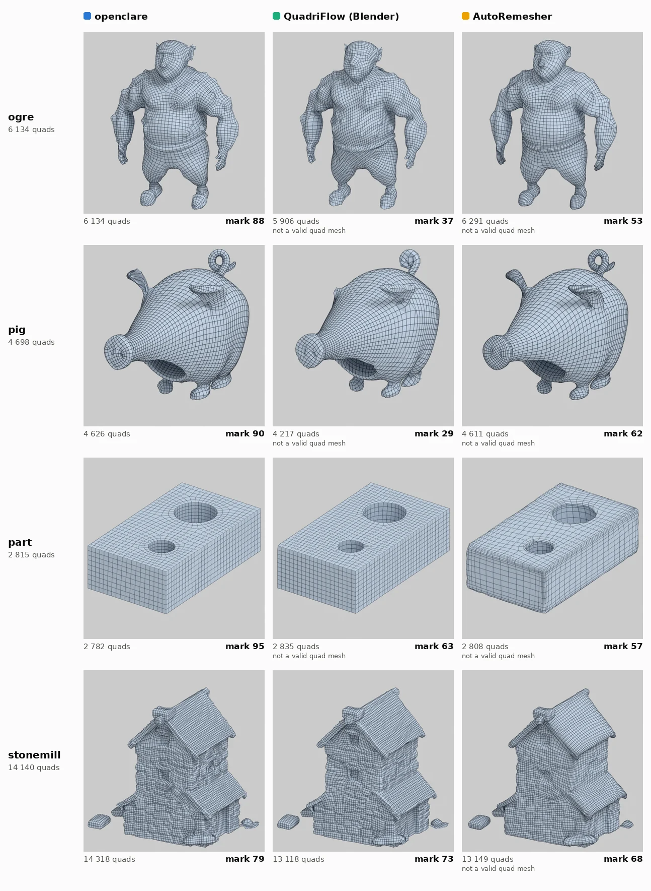

En construction
openclare PRO
Du sculpt à l'asset prêt pour le moteur, avec la retopologie d'openclare au cœur.
- Retopologie quad automatique par le moteur open source openclare
- Pont vers Multires : le détail du sculpt reprojeté sur les niveaux
- UV, bakes (hauteur, normales, AO), export et LOD pour les moteurs de jeu
- Traitement par lots, exécution sans interface, licence et support studio
